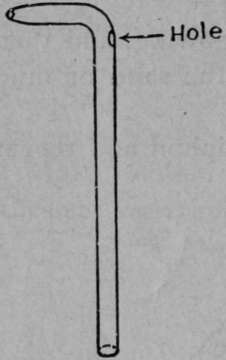
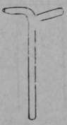
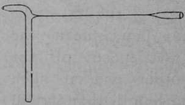
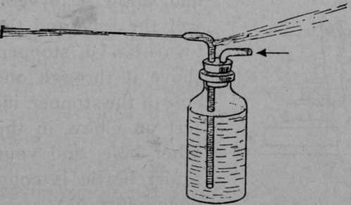
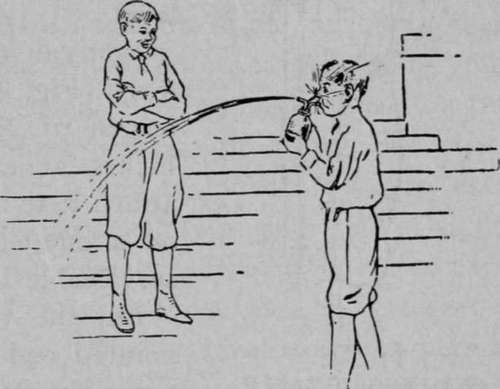
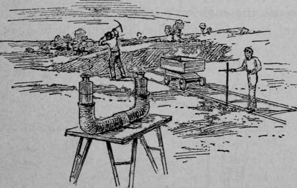

Experiment 42. How To Make A Trick Squirt Bottle
Description
This section is from the book "Experimental Glass Blowing For Boys", by Carleton J. Lynde. Also available from Amazon: Experimental Glass Blowing for Boys.
Experiment 42. How To Make A Trick Squirt Bottle
You can have any amount of fun with a trick squirt bottle. It is exactly the same as the squirt bottle described in Experiment 41 except that it has a hole just below the bend (Fig. 57).
To make the hole, make the long bent nozzle as in the last experiment, then heat the tube just below the bend in the blowpipe flame, touch a piece of glass tube to the red-hot glass (1, Fig. 58), and pull it away (2, Fig. 58). Do you find that the hot glass is pulled out into a thin pointed tube? Break off the thin tube close to the large tube, heat in the blowpipe flame until the edges are smooth and at the same level as the sides of the large tube. Flare the edges of the hole, if necessary; it should be about 1/8 inch in diameter.
Now fill the bottle with water, and blow hard (Fig. 59). Do you find that one stream of water is driven into your face and another out of the nozzle?
Experiment 43. Fun With A Trick Squirt Bottle
Tube For Trick Squirt Bottle
1
2
Fig. 58. Making A Small Hole
Fig. 59. Trick Squirt Bottle
Now to have fun with your trick bottle, show it to one friend at a time. Do not ask him to try the bottle, just go where he can see you and squirt a long stream, but unknown to him have your finger over the hole below the bend.
Your friend will just naturally want to have a try at it. So you say "All right, let's see who can squirt the longest stream." Tell him that all he has to do is to take a deep breath and blow as hard as he can. He will do so, with laughable results (Fig. 60).
Now together find another friend. Do not ask him to blow, but each of you blow as long a stream as you can, where he can see you. He will beg to be allowed to try, and finally you let him, with the same laughable results.
Trick Bottle In Action

Continue to:
- prev: Experiment 41. How To Make A Squirt Bottle
- Table of Contents
- next: Experiment 44. How To Make An Engineer's Level